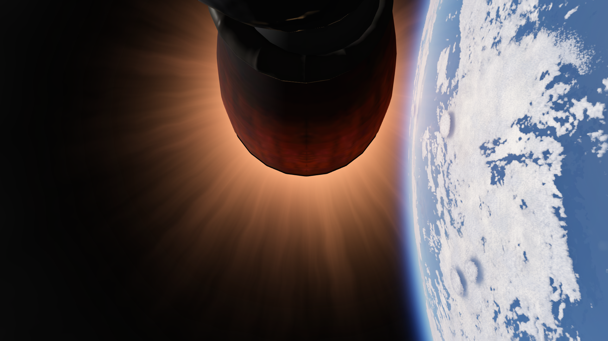
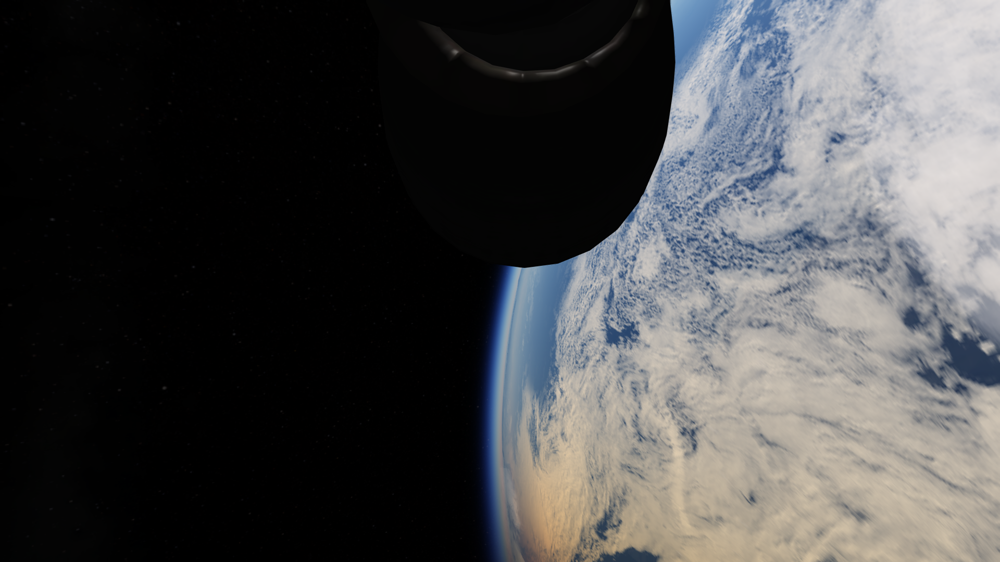

USSF-15
Vehículo: Falcon Heavy
Fecha: 24 de febrero de 2025
Estado: Éxito
Cliente: Airon inc

Introducción
Halcon Space lanzó con éxito la misión USSF-15, transportando una carga clasificada a una órbita secreta. Debido a requerimientos de la misión ninguno de los 3 propulsores de Falcon Heavy pudo ser recuperado.
Detalles Técnicos
- Vehículo: Falcon Heavy
- Altura del cohete: 70 m
- Propulsor: B1071.1 • B1072.1 • B1073.1
- Carga útil: Carga clasificada
- Órbita: Clasificado
- Recuperación: N/A
Imágenes de la misión



